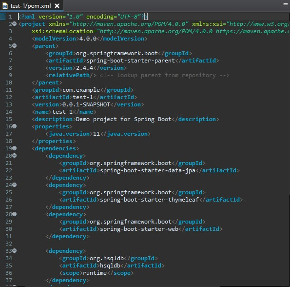
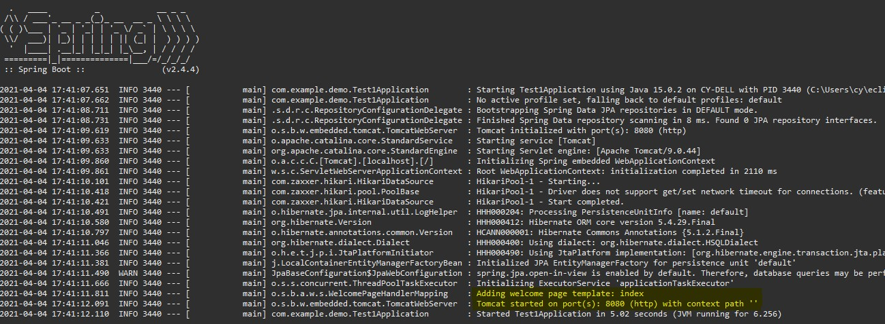
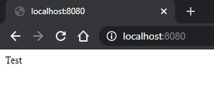

The things here to pay attention to are the templates folder, application.properties, and pom.xml
The templates folder is where we put our html files like our /index, /hello, etc.
You may notice that the .java file is highlighted, theres no real need to edit it. However the "Getting Started" section has a tutorial that creates a "Hello World" by editing this file.
application.properties does not hold much now, but if you want to integrate a database some work will go into that. Think of this file as holding environment variables.
The pom.xml file holds all the dependencies you checked when creating the Spring Boot Program. It is extremely messy, but you can manually change/add/remove dependencies here.
This is what a basic pom.xml file looks like.
Now you can add a basic html file like index.html to the template folders.
You can copy/paste a basic index.html from here
It is important to include the Doctype and xmlns lines as they link the dependency thymeleaf to generate the index.
Now right click on the project, Run As -> Spring Boot App. And a Server should start up on localhost:8080
Go to localhost:8080 and it will show the index you just created.
